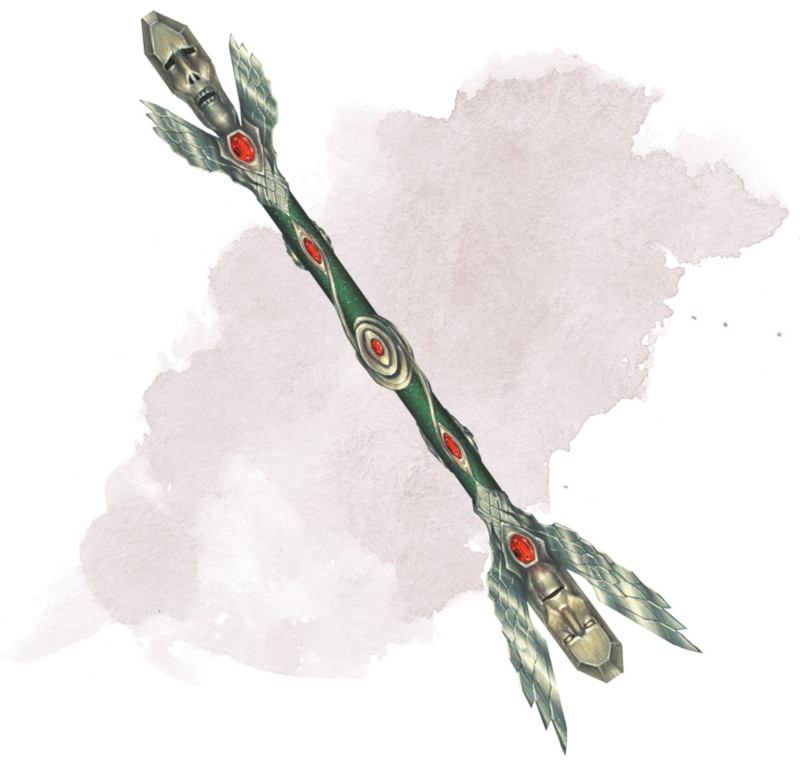

Sceptre de résurrection
Sceptre, légendaire (nécessite un lien avec un clerc, un druide ou un paladin)
Le sceptre possède 5 charges. Tant que vous le tenez, vous pouvez utiliser une action pour lancer depuis le sceptre l'un des sorts suivants : guérison (dépense 1 charge) ou résurrection (dépense 5 charges). Le sceptre récupère 1 charge dépensée chaque jour à l'aube. Si le sceptre tombe à 0 charge, lancez un d20. Sur un résultat de 1, le sceptre disparaît dans une explosion de lumière.
Dungeon Master´s Guide
